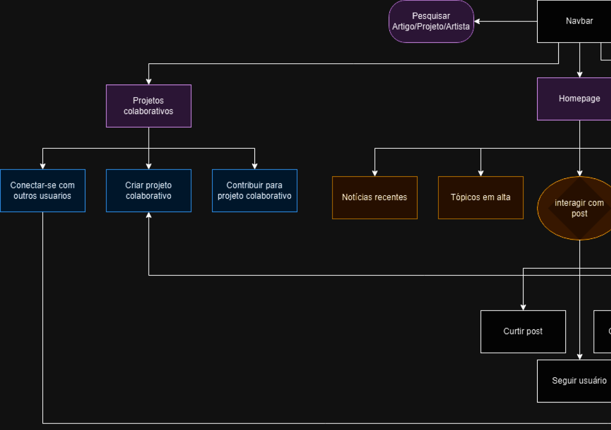
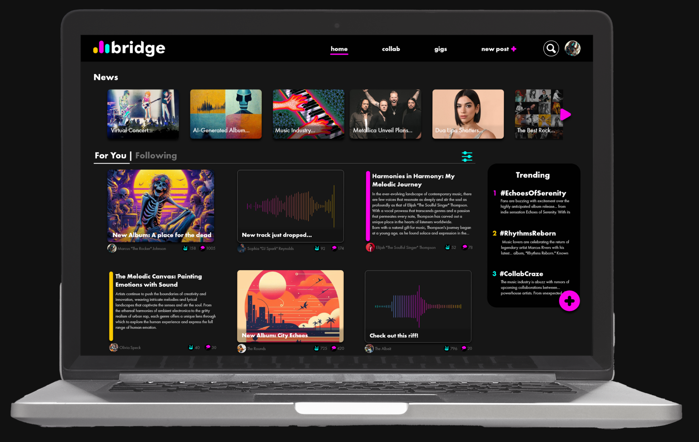
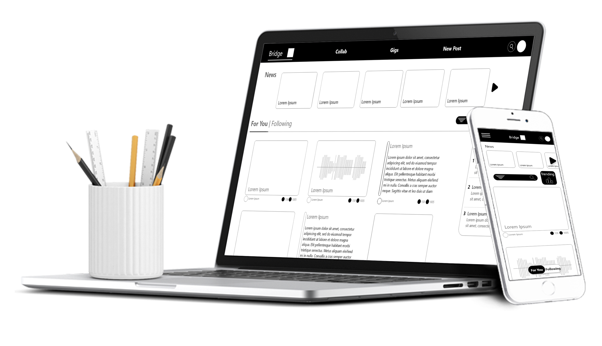
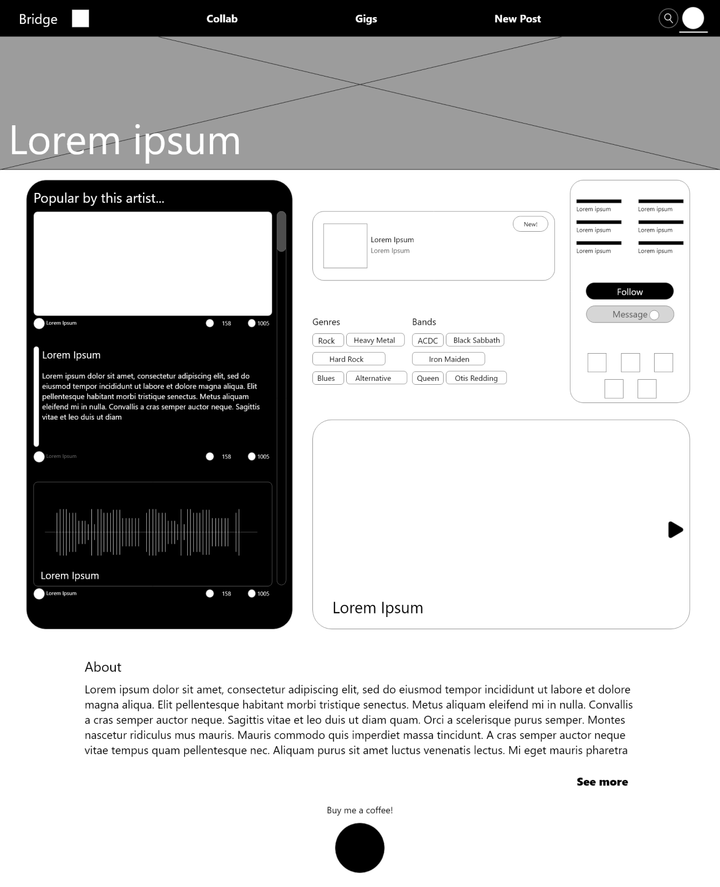
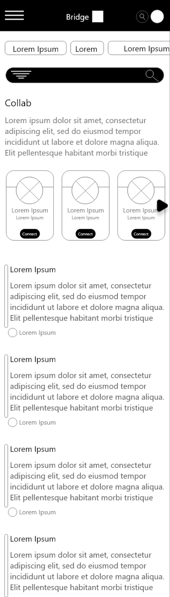
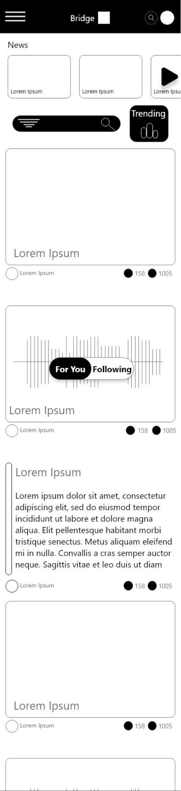
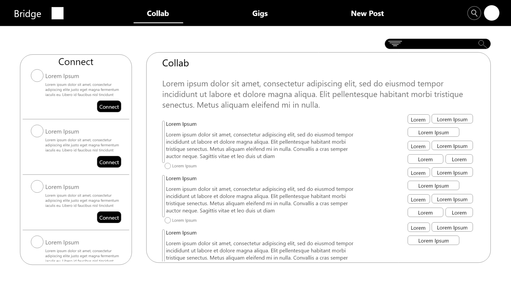
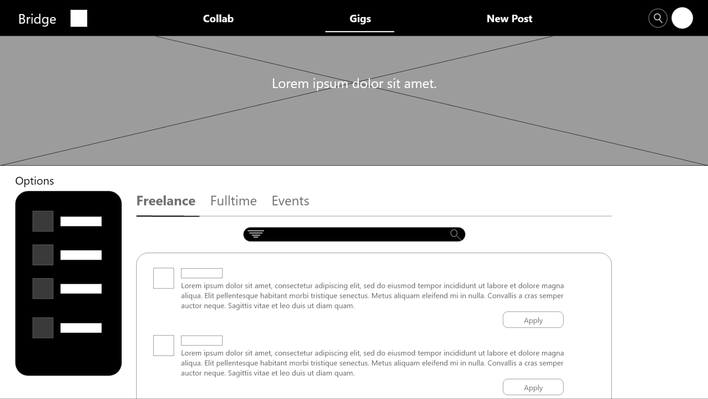
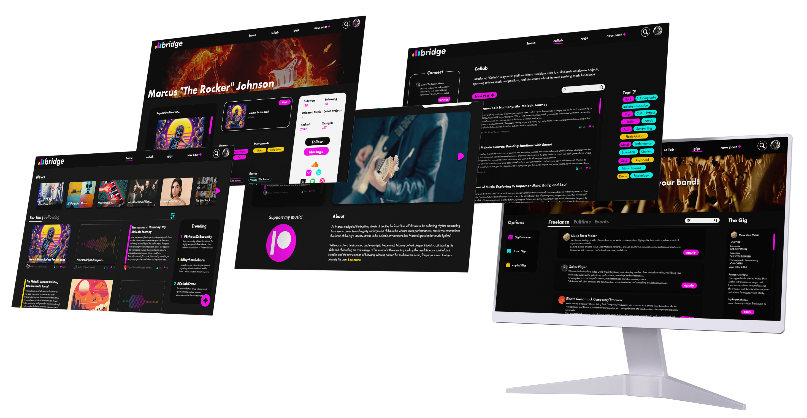

É um lugar onde artistas musicais podem expor seu portfólio musical e colaborar em diversos tipos de projetos.
O mundo musical sente falta de um lugar em que possa mostrar seu talento bruto, um lugar que possa gerar mais colaboração, e inspirar uns aos outros.
O objetivo, era criar uma plataforma onde músicos podem expressar sua arte, assim como colaborar com outros artistas em artigos, e projetos musicais.
Como o objetivo era criar uma plataforma onde músicos possam se expressar, assim como colaborar com outros artistas, tomamos uma abordagem de Rede social.
 Em um abordagem de Rede social, a homepage se torna um feed onde se pode ver a atividadede diversos músicos , e todas as funcionalidades do site ficam disponíveis por meio de uma barra de navegação no topo do site.
Durante a fase de desenvolvimento analisamos alguns concorrente indiretos como o Behance, e utilizamos insights para criar engajamento maior na plataforma.
About page
Collab - Mobile
Home - Mobile
Collab page
Gigs - page
Em um abordagem de Rede social, a homepage se torna o feed onde se pode ver a atividadede diversos músicos , e todas as funcionalidades do site ficam disponíveis por meio de uma barra de navegação no topo do site.

Impacto
"Admiro a originalidade da proposta. As cores foram selecionadas com precisão, apresentando uma beleza única que se destaca em meio a outros aplicativos. Além disso, o design das telas demonstra uma notável intuitividade, tornando a experiência de uso simples e acessível.”
O que eu aprendi?
Quanto mais tempo dedicado a um projeto, mais oportunidades surgem para refiná-lo. As iterações permitem identificar falhas, implementar melhorias e evoluir gradualmente. Esse processo contínuo não só melhora a qualidade final, mas também enriquece a jornada de aprendizado.
Contato
Se precisar de mais informações ou quiser ver mais do meu trabalho, sinta-se à vontade para entrar em contato!
E-mail: guizapa368@gmail.com
LinkedIn: https://www.linkedin.com/in/guilherme-zapater/